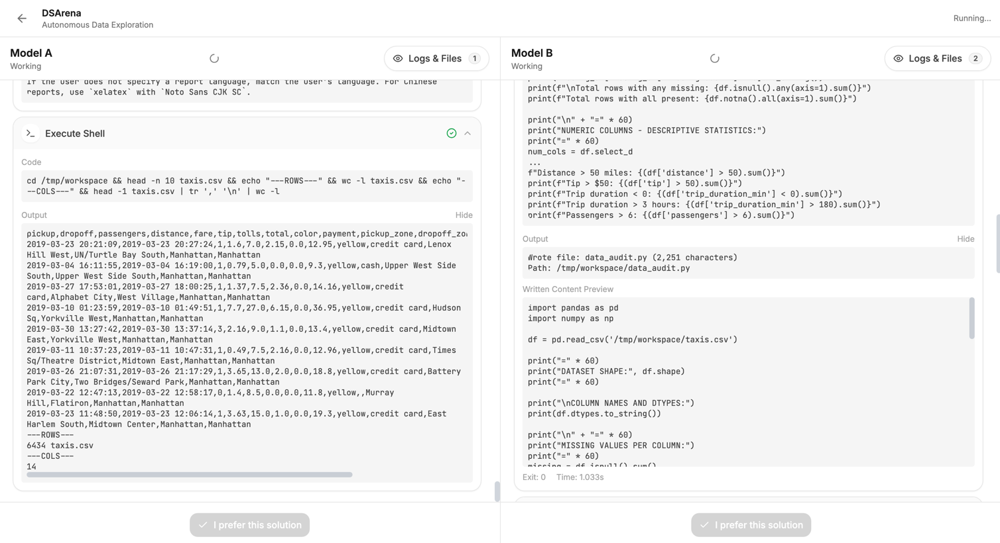
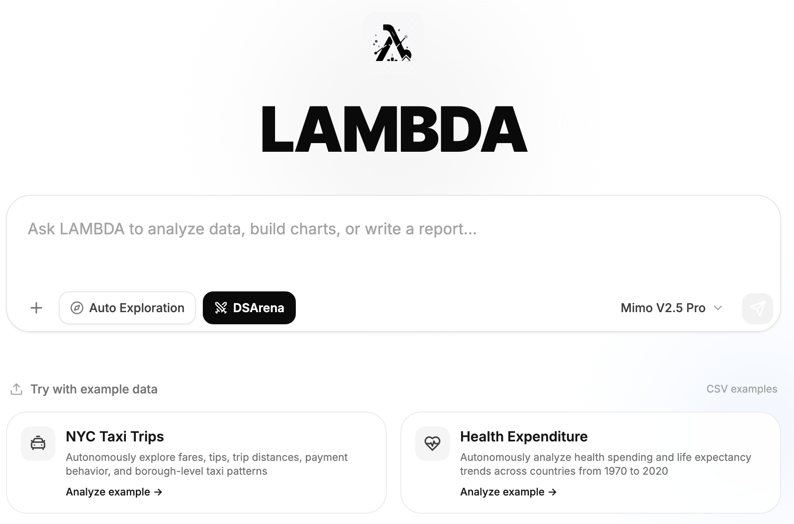
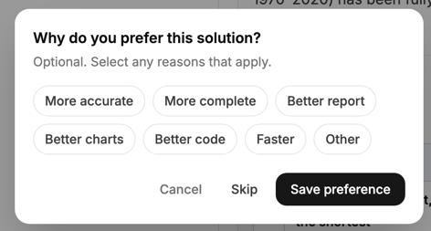
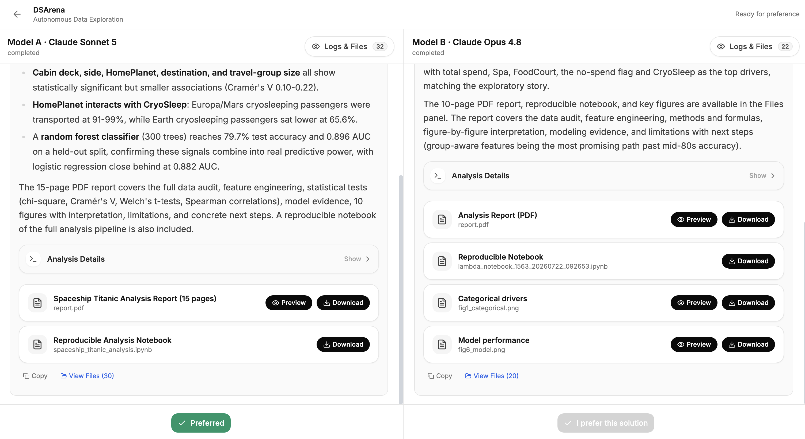
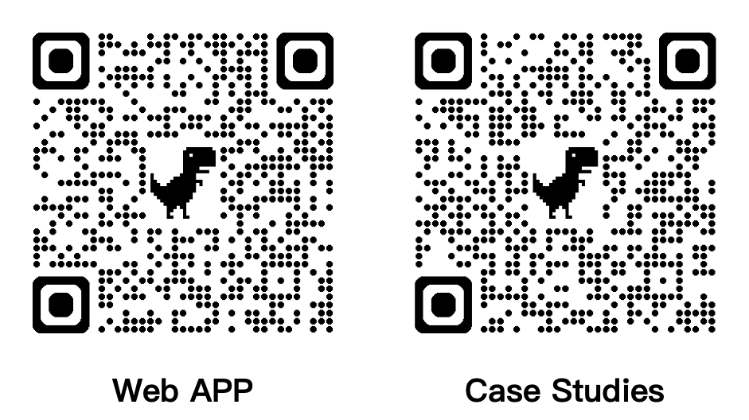

DSArena: One Prompt, Multiple Models Working for You
Have you encountered these problems when analyzing data?
GPT, Claude, DeepSeek... Which one is best suited to my task?
When one model produces unsatisfactory results, you have to switch models, upload the files again, and describe your requirements all over again. Even when the analysis looks reasonable, it can be difficult to know whether a better approach exists.
Now you can use the all-new DSArena directly in LAMBDA. One prompt puts multiple models to work for you.

What is DSArena?
DSArena (Data Science Arena) is LAMBDA's multi-model data science workflow. Simply upload your data to LAMBDA and enter your request once. Multiple large language models will begin working simultaneously, analyzing your problem independently and producing their own complete results. To enter this workflow, visit the LAMBDA Web App and select DSArena.

Whether you are preparing data, analyzing Excel or CSV files, creating charts, building models, or generating reports, there is no need to move back and forth between platforms or repeatedly copy the same instructions.
For example, you can simply tell DSArena:
Multiple models will then complete the task independently. You can review the analyses, charts, code, and files they produce, select the result you prefer, and specify why you chose it.

After choosing your preferred result, you can see which model is better suited to your task:

DSArena currently includes models from the GPT-5.6 series, Claude Sonnet 5, Gemini 3.1 Pro, and more. Try it free for a limited time.
Log in to LAMBDA now and experience DSArena:
